Flow screens — 2026-07-04
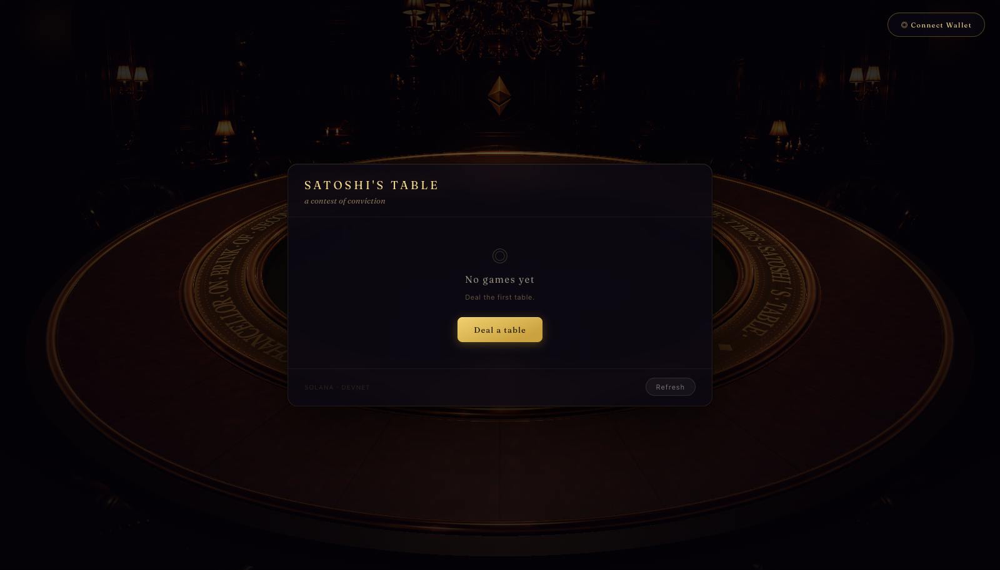
01 · Dashboard (real) — discovery exactly as it loads against the live lobby endpoint
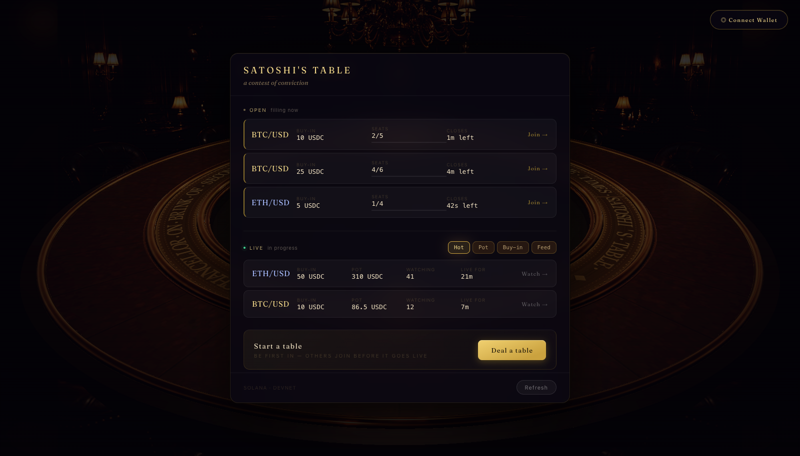
02 · Dashboard (populated) — open + live table lists (mock rows)
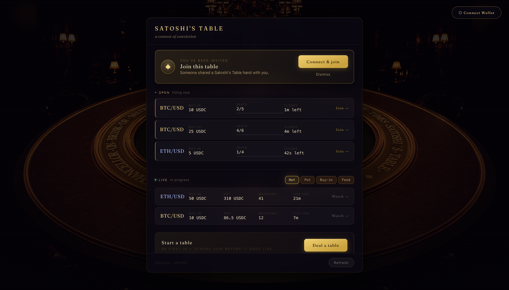
03 · Dashboard — invite prompt — arriving via a ?table= deep link
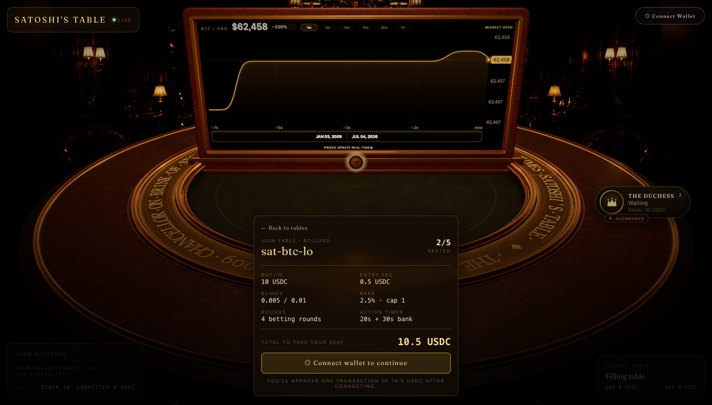
04 · Lobby — join — terms card before committing a deposit
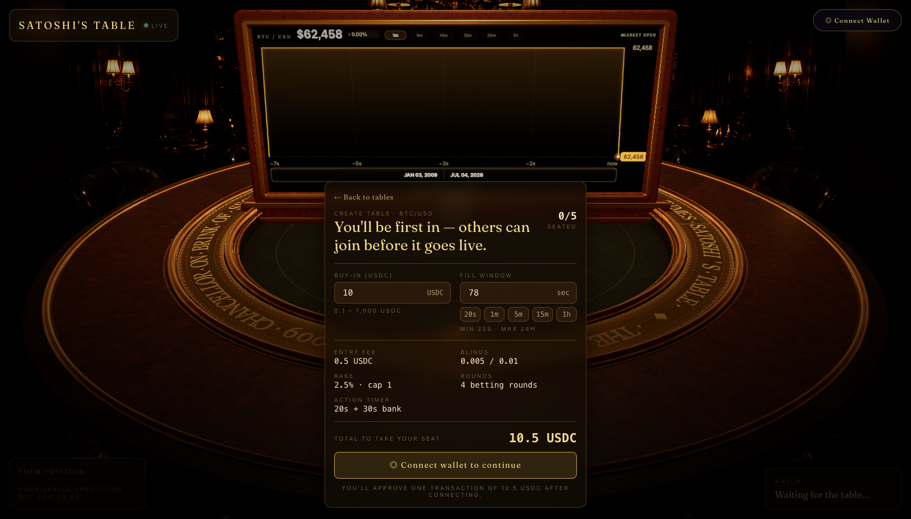
05 · Lobby — create — host-editable buy-in + fill window
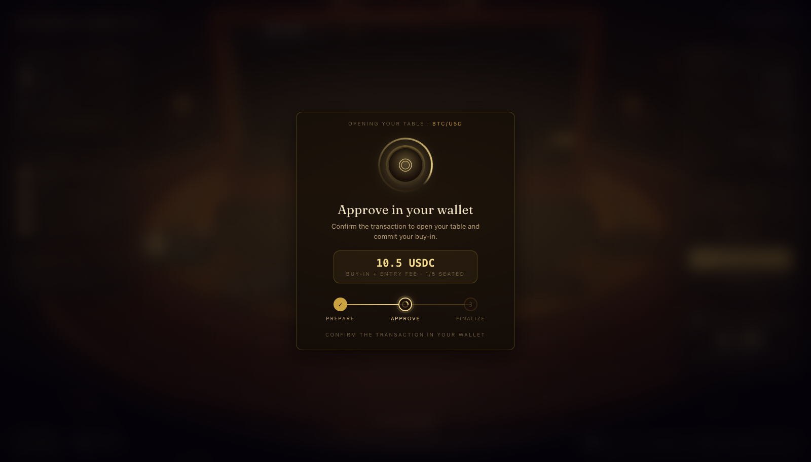
06 · Tx ceremony — signing — create-table flow, wallet approval step
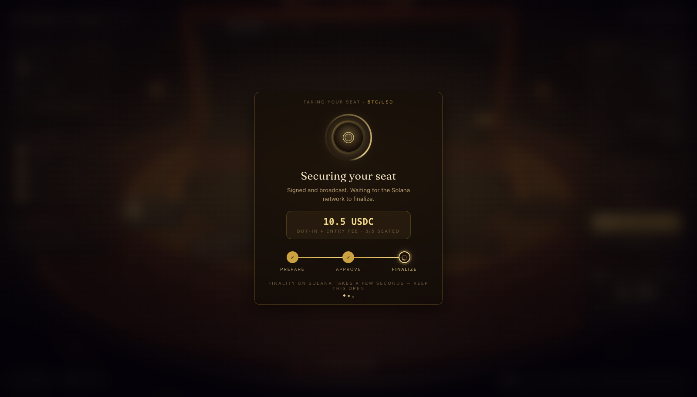
07 · Tx ceremony — confirming — join flow, waiting for finality
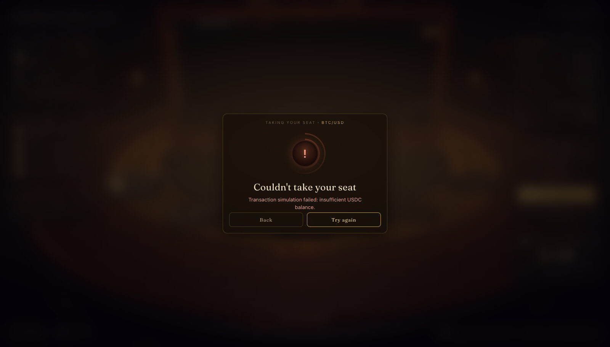
08 · Tx ceremony — error — failed deposit with retry
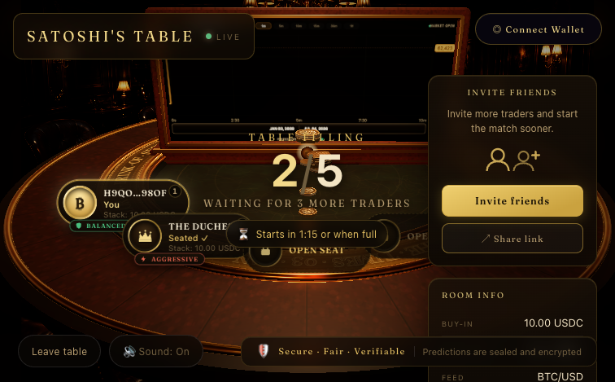
09 · Waiting room — filling — 2/5 seated, below minimum (gold)
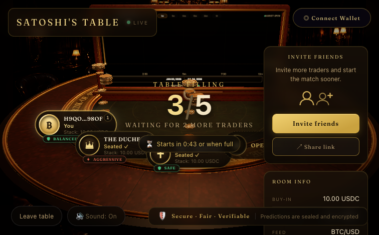
10 · Waiting room — ready — 3/5 seated, min reached (green)
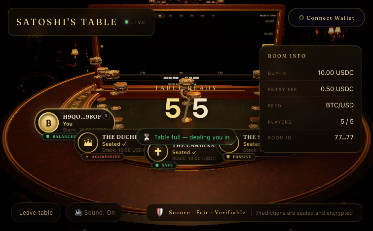
11 · Waiting room — full — 5/5, invite card hidden, about to start
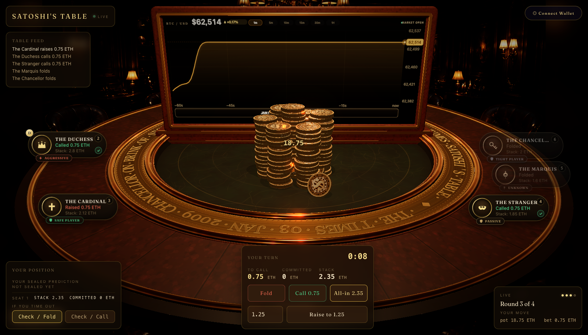
12 · Live — your turn — betting panel with fold / call / raise / all-in
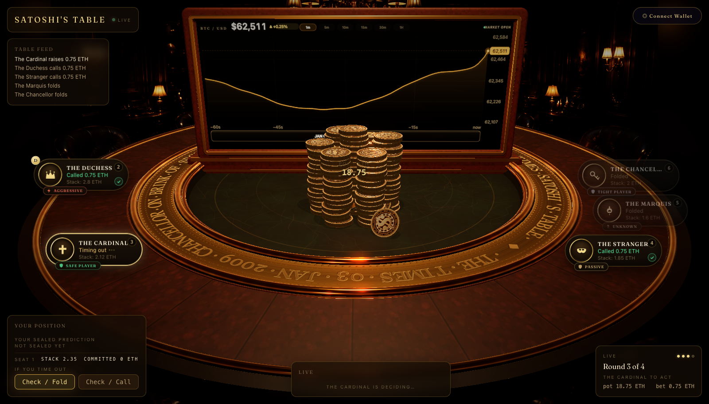
13 · Live — opponent acting — active-turn ring + thinking state on seat 2
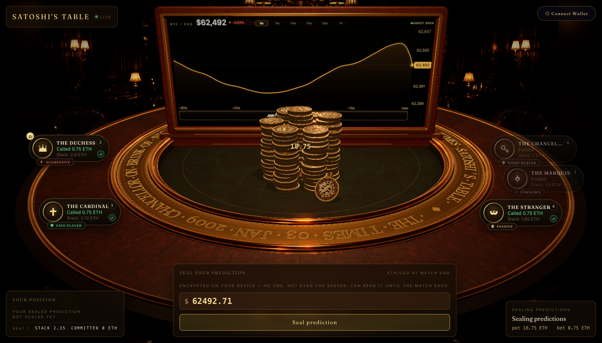
14 · Sealing — open — seal-your-prediction input
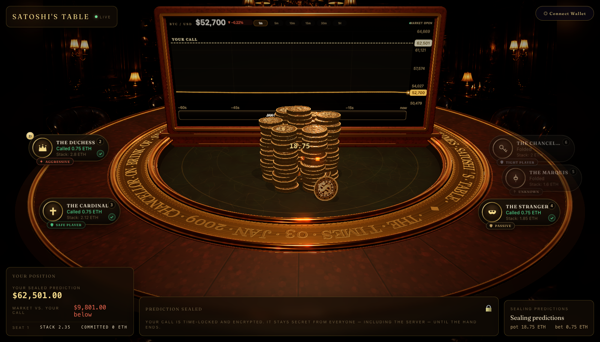
15 · Sealing — sealed — calm "you're set" state, prediction visible only to you
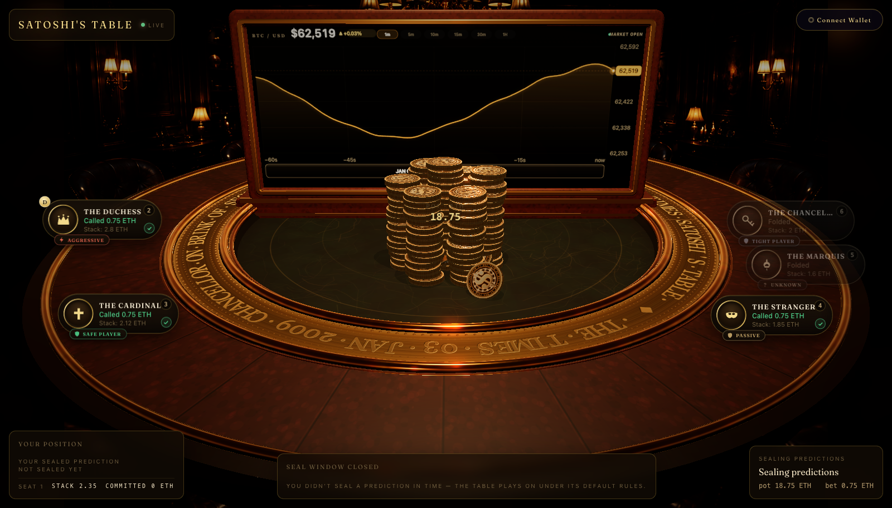
16 · Sealing — window closed — missed the seal window
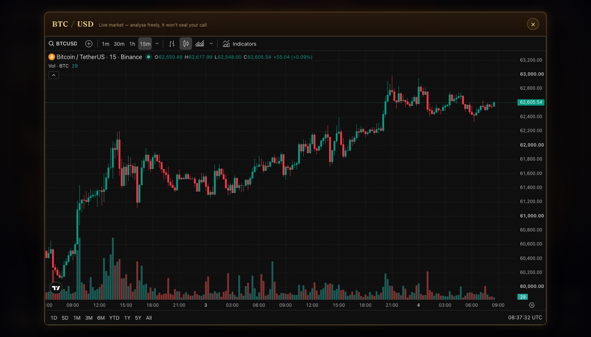
17 · Price chart overlay — fullscreen market chart
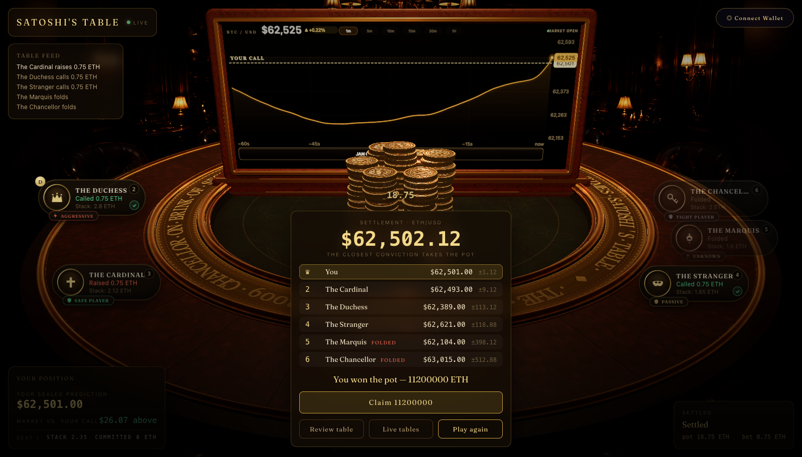
18 · Resolution — settled — reveal + awards + claim
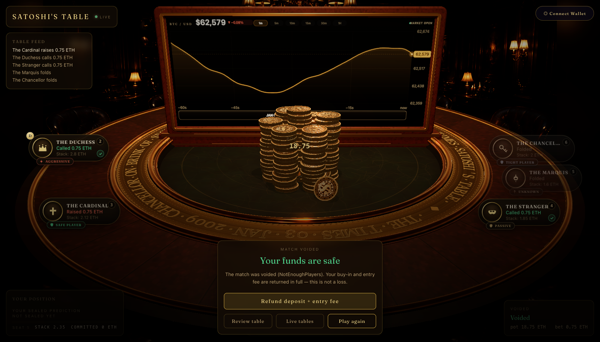
19 · Resolution — voided — match void, refund path